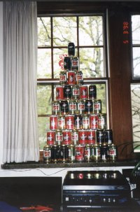

Beeramid Night
| When: Saturday May 1, start cooking around 5:00 [and
that means drinking, too] How Much? $10. Covers the cost of beer, brats, and anything else needed. If you don't want to drink beer or don't want brats, you can give whatever you think you should, though $5 would be easiest. What you need to do: click here to fill out a short survey, and give Mike $ before Saturday. History: Last year on May 2nd, the Fab Four built a majority of the beeramid on the left. This year we want to make a bigger better beeramid. Last years had a nine can base, we have to at least make an 11 can base. On Saturday May 1st, we will start the evening early with a brat cookout on one of the grills outside Turner. After eating the beer brats (yes, they will be real beer brats), we will continue inside for the beeramid building. What is significant about that particular Saturday? It is the last weekend night before 21 hour quiet hours are in effect. Therefore, it is the official party night in 202 Turner. There will be a charge for beeramid night to pay for brats, buns, beer, and briquettes. It will probably be $5 to $10. Next weeks 202 News will have more details. Please have the money by next Thursday, April 29th [I'd like the money ahead of time to be able to buy stuff with everyone's money and know about how many people will come.] |
A Special 202 Turner Production